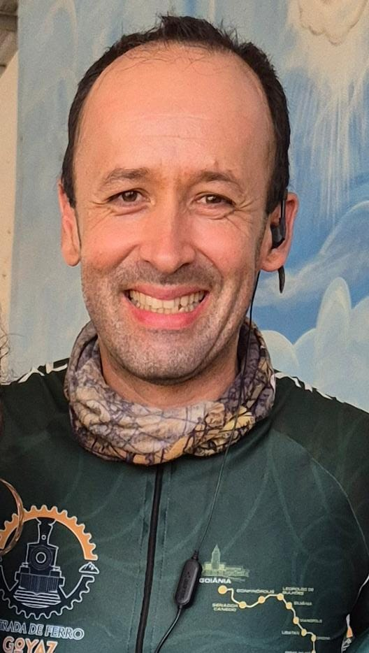

CRÉDITOS
ORIENTAÇÃO ACADÊMICA
A elaboração do Guia para Turismo Ecopedagógico em Ipameri-GO foi realizada sob a orientação do Prof. Dr. Anderson Rodrigo da Silva, cuja condução científica, rigor metodológico e aportes teóricos foram determinantes para sua estruturação e consolidação. Sua orientação foi essencial para o aprofundamento das reflexões, organização das etapas de pesquisa e alinhamento da proposta aos princípios da educação ambiental e do turismo sustentável.
Registro minha gratidão pelo acompanhamento atento, pelas análises criteriosas e, especialmente, pela confiança depositada, que me permitiu conduzir este trabalho com autonomia, responsabilidade e amadurecimento acadêmico.
COLABORAÇÃO TÉCNICA
O desenvolvimento deste Guia para Turismo Ecopedagógico em Ipameri-GO contou com a colaboração de Jair Júnior, ciclista há 12 anos e profundo conhecedor das trilhas e paisagens naturais do município. Desbravador desses locais, atuou como guia durante os percursos, compartilhando informações, registros fotográficos e conhecimentos construídos ao longo de sua experiência no ciclismo, contribuindo de forma significativa para o desenvolvimento deste projeto. Destaca-se, ainda, sua atuação em projetos de ciclismo no percurso da antiga estrada de ferro, iniciativa que integra prática esportiva e valorização do patrimônio histórico, cultural e ambiental local, reforçando o potencial do território para ações de turismo sustentável e educação ambiental.
Registro meu sincero agradecimento pela parceria e pela significativa contribuição para o desenvolvimento desta proposta.
